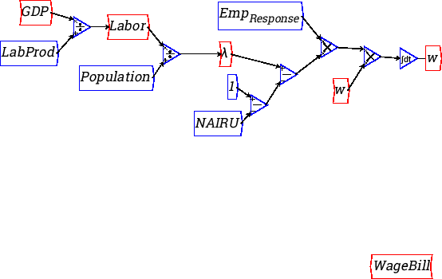

Next: Canvas background
Up: Reference
Previous: Godley Tables
All canvas items have a context menu, which allow a variety of
operations to be applied to the canvas item. Common context menu items
are explained here:
- Help
- bring up context specific help for the item
- Description
- Attach an annotation to the item. This is only
visible by selecting the description item from the context menu,
although whatever is set as the ``Short Description'' will also appear
as a tooltip whenever the mouse hovers over the item.
- Port values
- When running a simulation, you can drill down into
the actual values at the input and output ports of the variable or
operation, which is a useful aid for debugging models.
- Edit
- set or query various attributes of an item. This function
can also be accessed by double clicking on the item. (Plot widgets
behave slightly differently).
- Copy
- Creates a copy of an item, retaining the same attributes
of the original. This is very useful for creating copies of the same
variable to reduce the amount of overlapping wiring (aka "rats nest")
in a model.
- Flip
- actually rotates an object through . You can
specify aribtrary rotations of objects through the edit menu.
- Raise/Lower
- Raise and lower the canvas items relative to each
other. You may need to do this if a large item such as a Godley table
or plot is obscuring a wire, making it hard to access the wire's
context menu or handles,
- Browse object
- gives a low level drilldown of the internal C++
object this canvas item represents. It is perhaps more of interest to
developers.
- Delete
- delete the object.
Item specific context menu items:
- variables, parameters and constants
- Slider
- add a slider control to a variable. This is most
effective for controlling parameters and constants, but can also be
used to control inputless variables.
- Add integral
- attach an integration operation, and convert the
variable into an integral type
- integrals
- Copy Var
- copy just the integration variable, not the
integration operation
- Toggle Var Binding
- Normally, integrals are tightly bound to their
variables. By toggling the binding, the integral icon can then be
moved independently of the variable it is bound to.
- Godley tables
- Open Godley Table
- opens a spreadsheet to allow financial flows
defining the Godley table to entered or modified.
- Edit/Copy var
- allows individual stock and flow variables to be
copied or edited.
- Plot Widgets
- Expand
- By double-clicking, or selecting ``Expand'' from the context menu, a
popup window is created of the plot, which can be used examine the
plotting in more detail.
- Resize
- Allows you to resize the plot icon on the canvas
- Options
- Customize the plot by adding a title, axes labels and
control the number of axis ticks and grid lines on the detailed
plot. You can also add a legend, which is populated from the names
of variables attached to the plot.
- Delete
- remove the plot
Next: Canvas background
Up: Reference
Previous: Godley Tables
Russell Standish
2015-10-23